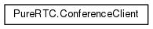

Zealcomm PureRTC
version 3.4.1v
Zealcomm PureRTC Client SDK for Javascript*
Class Hierarchy
Go to the textual class hierarchy

Generated on Fri Mar 16 2018 15:14:53 for Zealcomm PureRTC version 3.4.1v